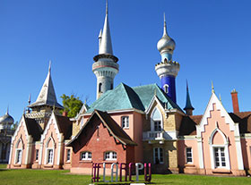
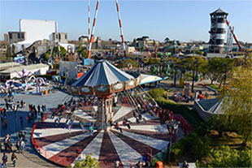
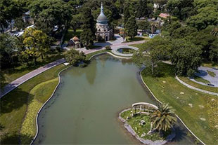

Horarios: Viernes, sábados y domingos de 12 a 19 hs.
Republica de los niños

En la República de los Niños se pueden realizar actividades recreativas, recorrer el predio con sus edificios a escala y disfrutar de juegos infantiles, picnic y desportes al aire libre.
Los fines de semana suele haber espectaculos gratis en el anfiteatro.
El ingreso y las actividades son gratuitas.
Dirección: Camino General Belgrano, esquina calle 500. Manuel Gonnet, La Plata.
Horarios: Abierto todos los días de 7 a 22 hs.
Parque de la costa

Horarios: Sábado, domingo y feriados de 11 a 19:30 h. Juegos mecánicos hasta las 19hs.
Precios de entradas y pasaportes actualizados en Pagina Oficial:
www.parquedelacosta.com.ar
Dirección: Vivanco 1509, Tigre, Buenos Aires.
EcoParque

Al igual que en otras ciudades del mundo, Buenos Aires convirtió el Zoológico en un Ecoparque abierto a todo el público.
Se comenzó un arduo trabajo en convertir el lugar en un amplio espacio público amigable con el medio ambiente.
Entrada libre y gratuita.
Dirección: Av. Las Heras y Av. Sarmiento (Plaza Italia) o por Av. Libertador y Av. Sarmiento.
Horarios: Abierto de martes a domingos y feriados de 11 a 18 hs.